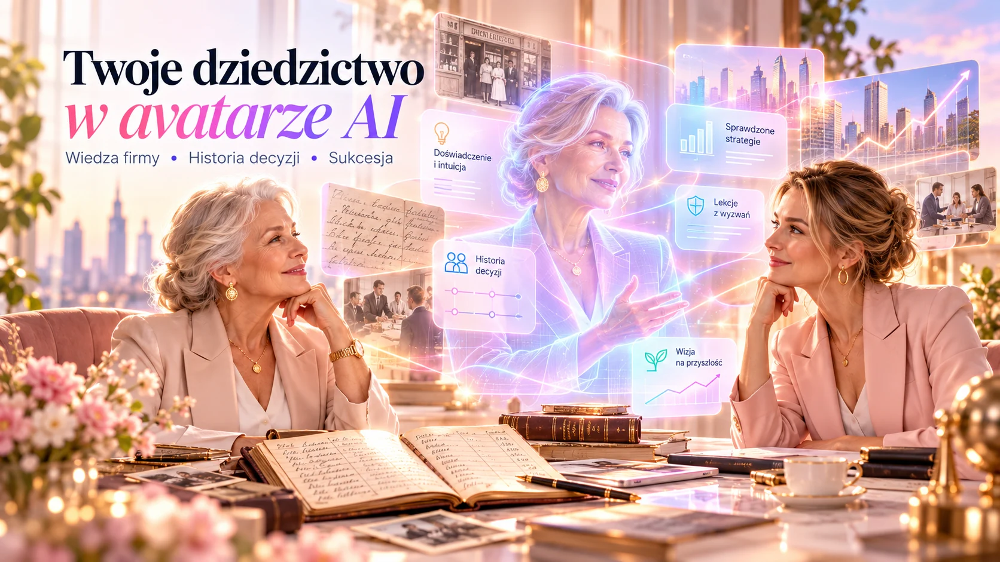
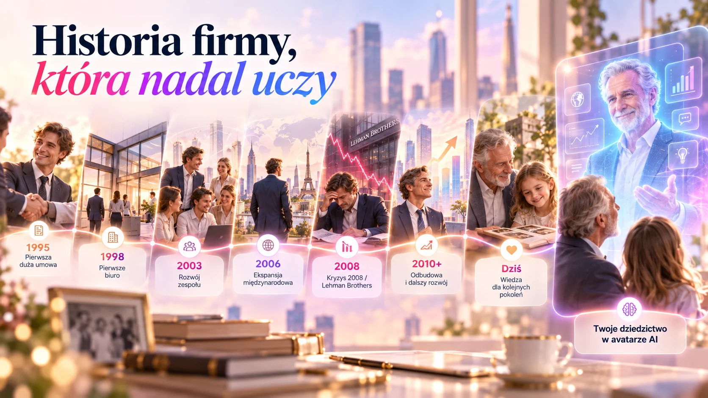
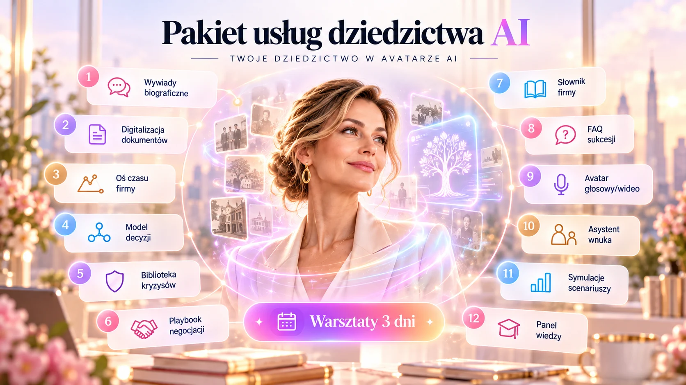

Twoje dziedzictwow avatarze AI.
Zachowaj historię pierwszych transakcji, kryzysów i przełomowych decyzji. Stwórz uporządkowaną bibliotekę wiedzy, z którą wnuk i kolejne pokolenia mogą rozmawiać — zawsze ze wskazaniem źródeł i jasną informacją, że odpowiada AI.

Nie tylko zdjęcia i wspomnienia. Historia decyzji, która może uczyć.
Łączymy poszczególne procesy w sposób dopasowany do obecnych aplikacji firmy, zamiast wymuszać ich natychmiastową wymianę.
Zbieramy historię
Wywiady, pamiętniki, zdjęcia, dokumenty, nagrania oraz zgodę osób.
Odtwarzamy kontekst
Oś czasu decyzji, nauka z kryzysów i weryfikacja źródeł.
Budujemy avatara
Cyfrowy narrator z etykietą AI i kontrolą dostępu dla rodziny.
Jedna organizacja. Połączone procesy.


Wybierasz usługi. Koszyk i zapytanie aktualizują się same.
Wstępnie zaznaczyliśmy funkcje dopasowane do Twojej branży. Odznacz te, których nie potrzebujesz; możesz też w pełnym sklepie dobierać kolejne moduły.
12 usług + warsztaty 3 dni
Kliknij kafel, aby dodać albo usunąć element z zapytania. Szacowane dni obejmują prace projektowe i testy; nie oznaczają terminu realizacji.
Warto wiedzieć przed startem
Czy avatar naprawdę będzie myślał jak przedsiębiorca?
Nie. To narzędzie rekonstruujące i prezentujące udokumentowaną wiedzę; wypowiedzi hipotetyczne muszą być oznaczone.
Czy mogę odtworzyć głos i wizerunek bliskiej osoby?
Wyłącznie po ustaleniu i udokumentowaniu odpowiednich zgód oraz praw; możemy zamiast tego wykorzystać neutralny głos narratora.
Czy materiały można usunąć?
Projekt obejmuje zasady retencji, eksportu, wyłączenia avatara i cofnięcia dostępu. Warunki są uzgadniane przed rozpoczęciem.